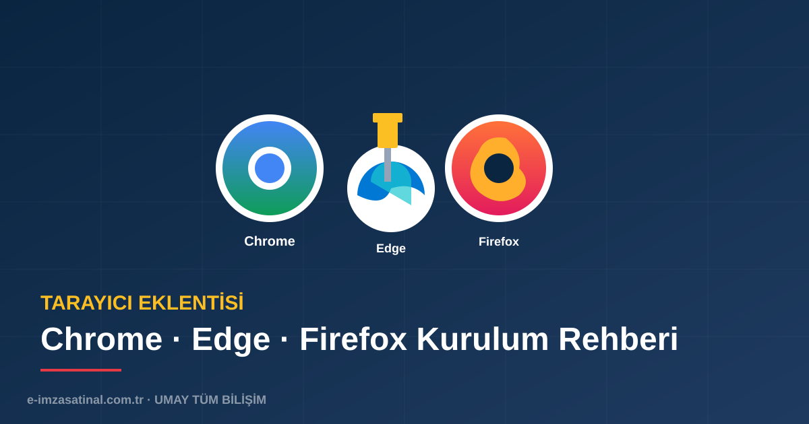

Tarayıcı Eklentisi Neden Gerekli?
E-imza ile web tabanlı işlemler (e-Devlet, EKAP, UYAP, MERSİS, GİB) yapabilmek için tarayıcının kriptografik kart ile iletişim kurabilmesi gerekir. Bu iletişimi sağlayan ara katmana tarayıcı eklentisi denir.
AKİS sürücüsü kartı işletim sistemine tanıtırken, tarayıcı eklentisi web sayfasının bu kartla konuşmasını sağlar. İkisi de gereklidir.
Hangi Tarayıcıda Hangi Eklenti?
- Google Chrome: Ayyıldız İmzala eklentisi (Chrome Web Store)
- Microsoft Edge: Aynı Chrome eklentisi (Edge eklenti mağazasında)
- Mozilla Firefox: NSS kütüphanesine PKCS#11 modülü tanıtımı
- Safari (Mac): Sınırlı destek — Mac kullanıcılar Chrome veya Firefox tercih etmelidir
Chrome İçin Kurulum
1. Chrome Web Store'a Git
Chrome tarayıcısında chrome.google.com/webstore adresine gidin.
2. "Ayyıldız İmzala" Ara
Arama kutusuna "Ayyıldız İmzala" veya "e-imza imzala" yazın.
3. "Chrome'a Ekle" Butonu
İlgili eklentinin sayfasında "Chrome'a Ekle" butonuna basın. Onay penceresinde "Eklentiyi ekle" seçin.
4. Eklentiyi Sabit Tut
Sağ üstteki yapboz ikonuna tıklayın, eklentinin yanındaki pin işaretine basarak sabit tutun.
Edge İçin Kurulum
Microsoft Edge tarayıcısı Chrome eklentilerini desteklediği için aynı eklentiyi kullanabilirsiniz. İki seçenek vardır:
- Seçenek A: Edge'de edge://extensions adresine gidin, "Diğer mağazalardan eklentilere izin ver" seçeneğini açın, Chrome Web Store'dan kurun.
- Seçenek B: Microsoft Edge Eklentiler mağazasında doğrudan "Ayyıldız İmzala" aratın.
Firefox İçin Kurulum (NSS Modülü)
Firefox, kendi NSS (Network Security Services) kütüphanesini kullanır. Bu nedenle PKCS#11 modülü manuel olarak tanıtılır:
1. AKİS Yüklendi mi Kontrol Et
AKİS yüklü değilse Firefox kartı göremez. Önce AKİS sürücüsünü yükleyin.
2. Firefox Ayarları
Firefox menüsünden Ayarlar → Gizlilik ve Güvenlik → Sertifikalar → Güvenlik Aygıtları bölümüne gidin.
3. Yeni PKCS#11 Modülü
"Yükle" butonuna basın. Modül adı: AKIS. Modül dosyası genellikle C:\Windows\System32\akisp11.dll konumundadır.
4. Tamam → Yeniden Başlat
Tamam'a basın ve Firefox'u yeniden başlatın.
Java Kurulumu Gerekli mi?
Eski e-imza uygulamaları Java Applet ile çalışıyordu. Bugün çoğu modern e-imza uygulaması Java gerektirmez. Ancak bazı kurumsal sistemler (özellikle eski belediye, üniversite portalları) hâlâ Java tabanlı çalışır.
Gerekiyorsa Oracle JRE veya AdoptOpenJDK'nın güncel sürümünü yükleyin. Java ile birlikte gelen Java Web Start ve tarayıcı entegrasyonu seçenekleri aktif edilmelidir.
Test ve Doğrulama
Tüm kurulumlar tamamlandıktan sonra şu adımlarla test edin:
- USB token'ı bilgisayara takın
- Tarayıcıdan turkiye.gov.tr adresine gidin
- "Elektronik İmza" seçeneği ile giriş yapmayı deneyin
- Sertifikanız listede görünüyorsa kurulum başarılıdır
Sorun Giderme
"Eklenti çalışmıyor / kart algılanmıyor"
- AKİS sürücüsünün güncel sürümünü yeniden yükleyin
- Bilgisayarı yeniden başlatın
- Tarayıcının güncel sürüm olduğundan emin olun
"Firefox sertifika göremiyor"
- PKCS#11 modülünün doğru tanıtıldığını kontrol edin
- AKIS modülünün etkin durumda olduğundan emin olun